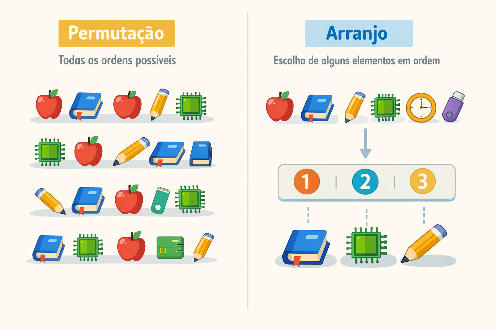
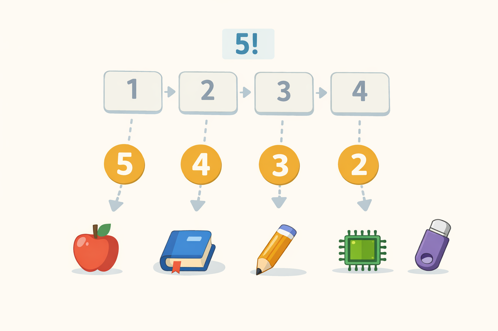
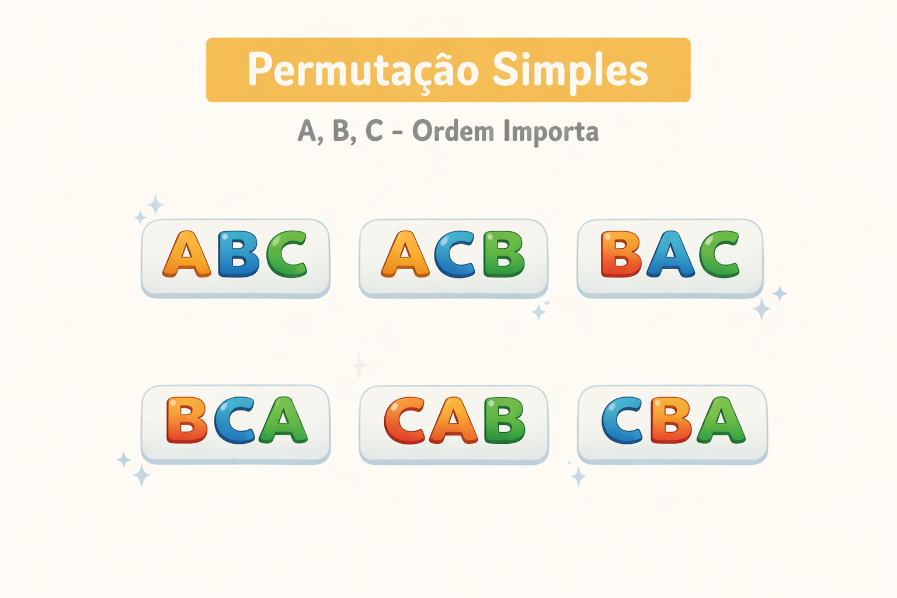
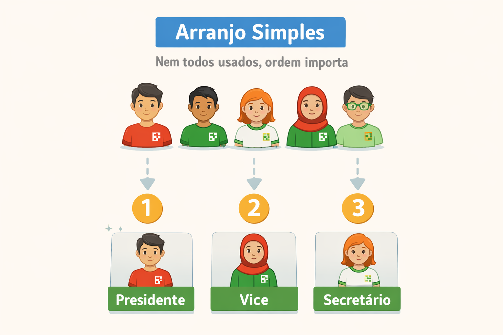
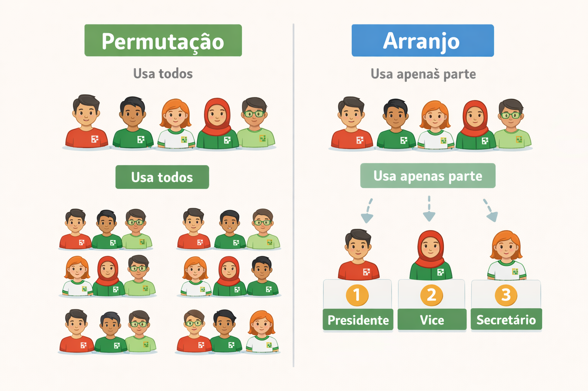
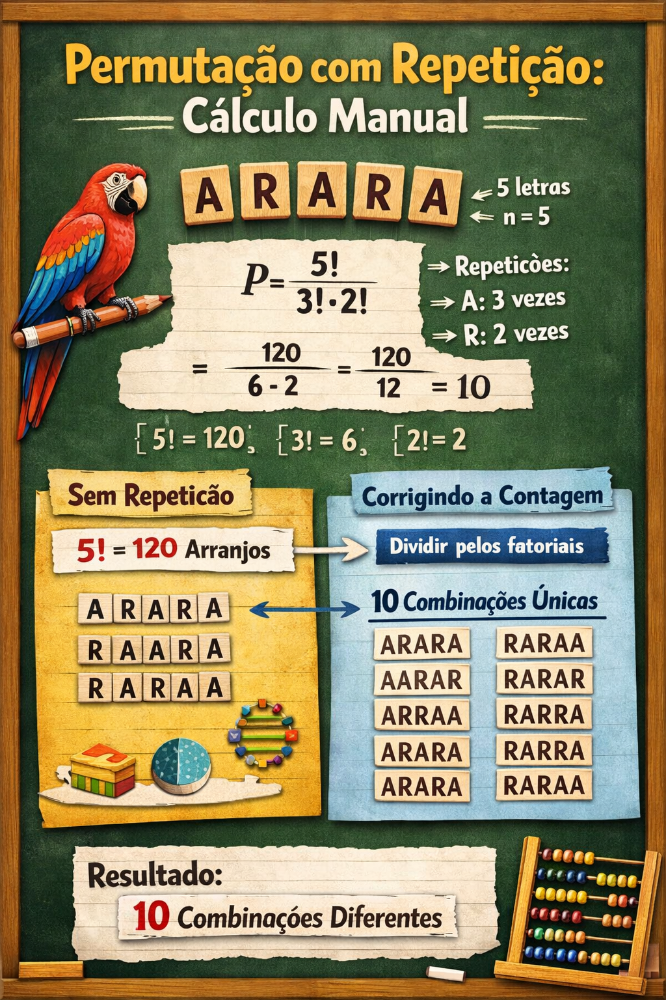

Disciplina: Matemática Discreta – Engenharia da Computação
Esta página foi planejada para servir como apoio durante a aula e também como material de estudo para quem não estiver presente.
Em muitos problemas, não basta saber quais elementos foram escolhidos: também precisamos saber em que ordem eles aparecem.
É justamente nesse tipo de situação que entram as permutações e os arranjos.

Antes de trabalhar com permutações e arranjos, precisamos revisar o fatorial, porque ele aparecerá novamente nas fórmulas.
\[ n! = n \cdot (n-1) \cdot (n-2) \cdots 2 \cdot 1 \]
\[ 0! = 1 \]
\[ 3! = 3 \cdot 2 \cdot 1 = 6 \]
\[ 4! = 4 \cdot 3 \cdot 2 \cdot 1 = 24 \]
\[ 5! = 5 \cdot 4 \cdot 3 \cdot 2 \cdot 1 = 120 \]
import math
for n in range(6):
print(f"{n}! = {math.factorial(n)}")
Esse exemplo usa a função math.factorial(), que calcula o fatorial de um número em Python.
Você também pode calcular pelo passo a passo dos exemplos de algoritmo das aulas anteriores.

A permutação simples é usada quando temos \(n\) elementos distintos e queremos organizar todos eles, considerando a ordem.
\[ P_n = n! \]
Quantas palavras diferentes podemos formar usando as letras A, B e C?
Passo 1: usamos todas as letras.
Passo 2: a ordem importa.
Conclusão: é uma permutação simples.
\[ P_3 = 3! = 6 \]
As possibilidades são: ABC, ACB, BAC, BCA, CAB, CBA.
from itertools import permutations
elementos = ["A", "B", "C"]
print("Permutações de A, B e C:")
for p in permutations(elementos):
print(p)
O módulo itertools possui a função permutations(),
que gera arranjos ordenados dos elementos informados.

O arranjo simples é usado quando temos \(n\) elementos disponíveis, mas vamos escolher e ordenar apenas \(p\) deles, sem repetição.
\[ A(n,p) = \frac{n!}{(n-p)!} \]
Há 5 pessoas disponíveis para ocupar 3 cargos: presidente, vice e secretário.
Passo 1: não usamos todas as 5 pessoas, apenas 3.
Passo 2: a ordem importa, porque os cargos são diferentes.
Conclusão: é arranjo.
\[ A(5,3) = \frac{5!}{2!} = 5 \cdot 4 \cdot 3 = 60 \]
import math
n = 5
p = 3
arranjo = math.factorial(n) // math.factorial(n - p)
print(f"A({n},{p}) =", arranjo)Esse exemplo implementa a fórmula do arranjo usando fatoriais em Python.

from itertools import permutations
elementos = ["A", "B", "C", "D"]
print("Permutações usando todos os elementos:")
for p in permutations(elementos):
print(p)
print("\nArranjos de 2 elementos:")
for a in permutations(elementos, 2):
print(a)
Em Python, permutations(lista) usa todos os elementos; já
permutations(lista, 2) gera arranjos ordenados de tamanho 2.

Quando há elementos repetidos, trocar dois elementos iguais não gera uma nova ordem. Por isso, a fórmula precisa corrigir a contagem.
\[ P = \frac{n!}{n_1! \cdot n_2! \cdot \cdots \cdot n_k!} \]
A palavra OVO tem 3 letras, com 2 letras O iguais.
\[ \frac{3!}{2!} = 3 \]
import math
from collections import Counter
palavra = "ARARA"
contagem = Counter(palavra)
n = len(palavra)
resultado = math.factorial(n)
for repeticoes in contagem.values():
resultado //= math.factorial(repeticoes)
print("Quantidade de permutações distintas:", resultado)
Esse código usa Counter para contar repetições e divide o fatorial total
pelos fatoriais de cada repetição, seguindo a fórmula da permutação com repetição.

Quando temos elementos repetidos, trocar a posição de elementos iguais não gera uma nova organização. Por isso, não podemos usar apenas \(n!\) sem corrigir a contagem.
A fórmula geral é:
\[ P = \frac{n!}{n_1! \cdot n_2! \cdot \cdots \cdot n_k!} \]
em que:
Primeiro, imaginamos que todos os elementos são diferentes. Nesse caso, haveria \(n!\) maneiras de organizá-los.
Depois, corrigimos o excesso de contagem dividindo pelos fatoriais das repetições, porque permutações que trocam apenas elementos iguais não produzem uma nova organização.
Passo 1: contar o total de letras.
A palavra ANA tem 3 letras. Portanto:
\[ n = 3 \]
Passo 2: identificar as repetições.
Passo 3: escrever a fórmula.
\[ P = \frac{3!}{2! \cdot 1!} \]
Passo 4: calcular os fatoriais.
\[ 3! = 6,\quad 2! = 2,\quad 1! = 1 \]
Passo 5: substituir na fórmula.
\[ P = \frac{6}{2 \cdot 1} = \frac{6}{2} = 3 \]
Conclusão: existem 3 palavras diferentes formadas com ANA.
Elas são:
ANA, AAN, NAA
Passo 1: contar o total de letras.
A palavra ARARA tem 5 letras. Então:
\[ n = 5 \]
Passo 2: identificar as repetições.
Passo 3: montar a fórmula.
\[ P = \frac{5!}{3! \cdot 2!} \]
Passo 4: calcular os fatoriais.
\[ 5! = 120,\quad 3! = 6,\quad 2! = 2 \]
Passo 5: substituir os valores.
\[ P = \frac{120}{6 \cdot 2} = \frac{120}{12} = 10 \]
Conclusão: existem 10 palavras diferentes formadas com ARARA.
Quando a ordem dos caracteres importa, a contagem pode envolver arranjos ou permutações, dependendo das restrições do problema.
Diferentes ordens de execução podem gerar diferentes comportamentos ou tempos de processamento.
Fluxos de ações e sequências de entrada podem ser tratados como problemas de ordenação.
De quantas formas 5 tarefas distintas podem ser ordenadas?
\[ 5! = 120 \]
Entre 9 estudantes, quantas maneiras existem de escolher 3 para os cargos de líder, vice e secretário?
\[ A(9,3) = \frac{9!}{6!} = 9 \cdot 8 \cdot 7 = 504 \]
Em uma campanha de adoção, 7 estudantes se candidataram para adotar gatos. A organização vai escolher 3 estudantes para receber, respectivamente, o primeiro, o segundo e o terceiro gato resgatado. De quantas maneiras diferentes essa distribuição pode ser feita?
Como estamos escolhendo 3 estudantes entre 7 e a ordem importa (primeiro gato, segundo gato e terceiro gato), temos um arranjo simples:
\[ A(7,3) = \frac{7!}{(7-3)!} = \frac{7!}{4!} \]
\[ A(7,3) = 7 \cdot 6 \cdot 5 = 210 \]
Portanto, existem 210 maneiras diferentes de fazer essa distribuição.
Quantas palavras distintas podem ser formadas com as letras de TATU?
\[ \frac{4!}{2!} = 12 \]